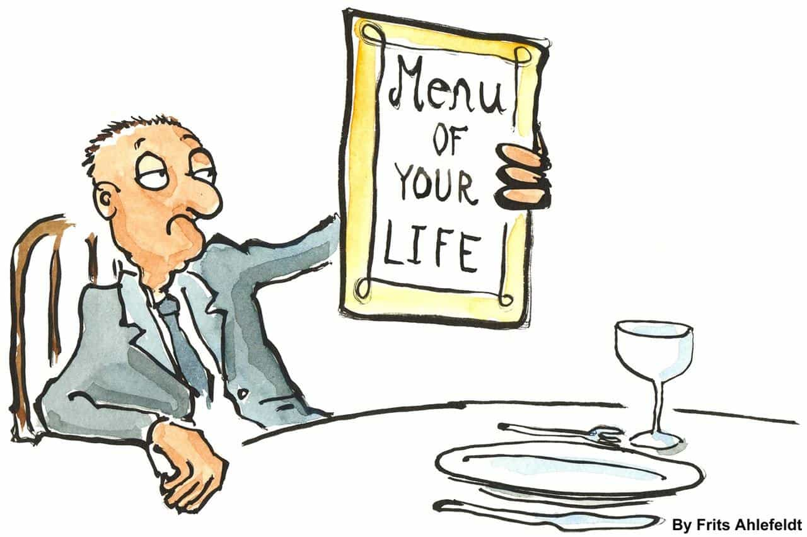
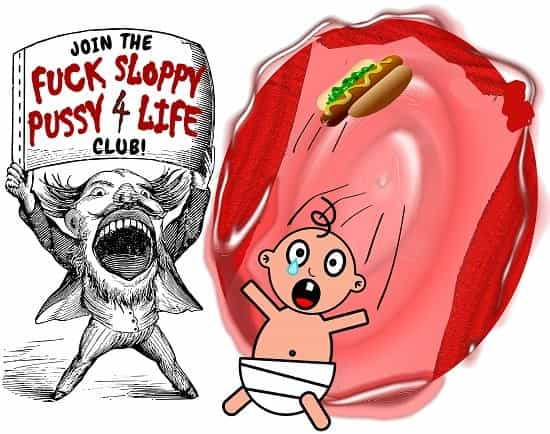

Dr. Ernest N. Wiseman is a sociobiologist with expertise in evolutionary sociology, interpersonal relations, and psychology of humor. His passion is creating hilarious t-shirts for dudes, and writing the Manliness & Humor blog


I recently searched “marriage” on ROK, assuming some of the top results would discuss reasons why men should opt-out of monogamy, an idea mentioned in ROK Community Belief #2. Instead, the top articles returned were predominantly pro-marriage, so I figured why not play devil’s advocate and give voice to the anti-marriage camp? Below I share four reasons man should not marry, which I introduce in no particular order.
Man’s evolutionary imperative—his natural default—is to spread his genetic footprint far and wide by way of fucking as many women as possible during his lifetime. I don’t know about y’all, but that seems like a pretty great default to me, so why rock that boat?
If left to our own instincts, we wouldn’t get married. It’s the woman who persuades us to do so. It serves her biological endgame, which is to secure access to our undivided resources and direct them toward the relatively limited number of offspring she’s capable of producing.
If you decide to join Team Monogamy, woman’s biological imperative wins, and yours loses, which means you must forevermore suppress your compulsions to bang other chicks.
If you give in to a woman’s well-played deceptions and marry her, you’ll later feel played. Specifics will vary, but getting played by a woman usually goes down like this…
When you first started dating, she does pretty much whatever sexual thing you want, whenever you want it. She also jibes with your brazen “I don’t give a fuck” sense of humor, inexplicably thinks your drinking buddies are cool, and doesn’t make a “thing” out of your apartment being a perpetual mess.
But then after the deal is sealed, you’ll start to notice changes. She no longer tosses around blow jobs like Halloween parade candy, her coolness with your dude-bro-guy lifestyle turns lukewarm, and your messy apartment suddenly does become a thing.
With more time, you’ll be astonished to see how deep that rabbit hole goes.

That “Art of Manliness” clown, Bret McKay, claims sex is way better and more frequent after marriage and that once married, you’ll never again want to fuck a woman other than your wife. Of course, this is utter nonsense and should be summarily dismissed. McKay is a bible-thumping Mormon who didn’t get to smash any puss until after he got married, so from his perspective, of course man gets more sex after marriage, compared to before—that’s “no shit” axiomatic.
The fact is that sex does not get better, nor more frequent, post-marriage, and you most certainly will think about banging other women.
Think about it… man’s instinct is to maximize his genetic footprint and continue his line into future generations, yes? His evolutionary compulsion is to knock-up as many women as possible during his lifetime, right? So does boinking one chick for the rest of your life advance that agenda?
No.
Does it seem even remotely plausible that saying, “I do,” somehow makes sex with one woman—the one you’ve already been fucking for quite some time—any better than before?
No.
Does kissing the bride magically reverse your natural biological compulsions to fuck a metric shit-ton of women over the course of your life?
Fuggitaboutit!
Participating in a socially-constructed ritual that locks you into an evolutionary sub-optimal mating arrangement does not lessen your compulsion to do what you’re designed to do. Anyone who says otherwise is delusional, at best.
And for the record, I am not some self-appointed manliness guru jagoff preaching to y’all based on my wildly unrepresentative experiences becoming a man. I am a Ph.D. social scientist, and my perspective is based on the evolutionary science of mate selection. So don’t trust me when I say you will get bored banging the same woman for the rest of your life—trust evolutionary science.

As if reason #3 weren’t bad enough, it is compounded by reason #4, which is that the woman’s physical attractiveness drops-off sooner or later. It might begin immediately if she balloons-up from the wedding cake, or it might not happen until later when her body emerges a train wreck after having kids.
Four kids into my previous marriage, my wife’s pussy was so loose that fucking her didn’t feel nearly as good as before. If you’ve ever heard that expression, “like throwing a hot dog down a hallway,” then yeah. It was like that.
The point is that whatever the timeline, and for whatever the reason, her physical attractiveness will diminish, and that shit gets worse at the discretion of father time and his ugly stick. So not only will you grow bored of boinking your wife week in and week out, you’ll eventually cease being attracted to her altogether.
As noted elsewhere on ROK, marriage does have its functions. However, one could argue marriage is a gigantic scam perpetrated by woman against man, and that it’s in man’s best interest to opt-out. Playing devil’s advocate, I made this argument by noting that marriage (1) does not agree with man’s evolutionary imperative, (2) leads to man feeling deceived when the relationship yields fewer benefits after marriage, compared to before, (3) introduces boredom from having to bang the same broad forevermore, and (4) locks him into a relationship with diminishing returns with regard to woman’s physical attractiveness.
Read More: Should You “Man Up” And Get Married?